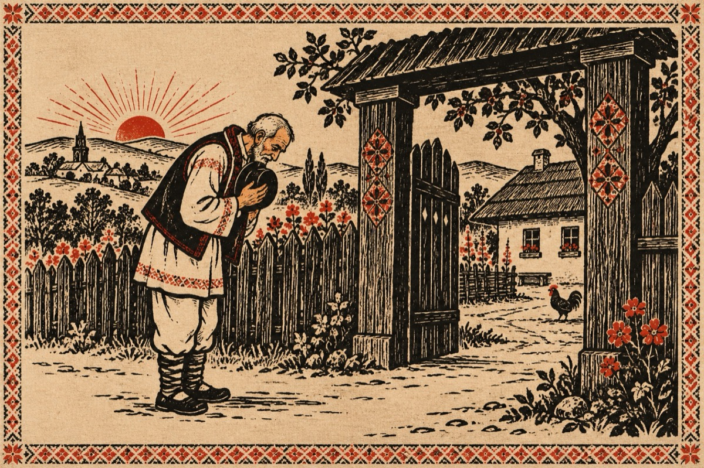

Cine sunt eu
Eu sunt de-al meu
Dar și de-al vost’
Țin la mine, e-al meu EU.
Că de când copil am fost,
La Deva, avut-am rost!
În BALATA am trăit,
Ca orice copil din sat
Cu toții m-am împrietenit
Sătenii m-au adoptat!
Eu purtam o etichetă
Imediat după război
Fost-a marea secetă,
Acolo la noi!
În Moldova m-am născut,
Necazul aici m-a dus.
Și-aici am copilărit,
Unde soarele răsărit-a și-a apus!
Și după atâta timp
Ce-am umblat în lumea toată,
Precum Zeus în Olimp,
M-am întors la-ceastă vatră!
Dorul nu te lasă-n pace
Că-sai-i dorul bată-l vina.
El te face și desface,
Grija-ți poartă totdeauna!
Astăzi vin cu plecăciune,
Și-mi scot clopu-n fața voastră.
Cu un gest de mulțumire
Fiindcă m-ați avut în gazdă!...
Vasile Groza